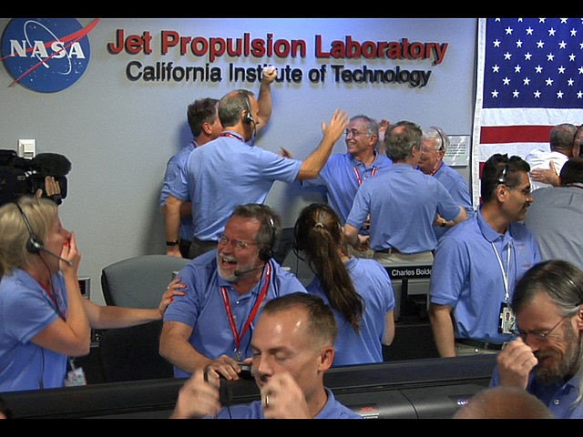
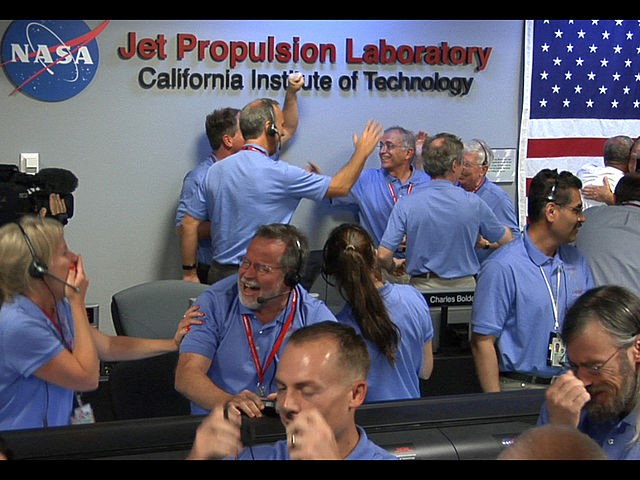

Humor tells express humor family words
Last chapter, we looked at humor family words—context-specific variations of the generic word “humor.”
Since humor family words are alternative words for humor, we’ll see humor tells whenever someone feels appreciation, generosity, safety, and so on:
 Above, grandparents feel appreciation, comfort, connection, delight, joy, relief, welcome and so on—and so expresses humor tells like social seeking (with the baby or someone off-camera), socially tightening (by sitting close to each other), smiling, relaxing posture, having energy, having raised spirits, expressing optimism, and so on.
We see the same thing in the picture below. There’s a quiet moment at a petting zoo, and the caretaker of the camel stops by to readjust its harness and check up on it:
Above, grandparents feel appreciation, comfort, connection, delight, joy, relief, welcome and so on—and so expresses humor tells like social seeking (with the baby or someone off-camera), socially tightening (by sitting close to each other), smiling, relaxing posture, having energy, having raised spirits, expressing optimism, and so on.
We see the same thing in the picture below. There’s a quiet moment at a petting zoo, and the caretaker of the camel stops by to readjust its harness and check up on it:
 The man feels appreciation, connection, relief, safety, and so on—and so expresses humor tells like smiling, relaxed posture (leaning on bar), brightening, focusing on present, loss of situational awareness (ignoring what’s around him), raised spirits, social tightening (with camel), and so on.
We can annotate another photo below. People involved in a space program celebrate successfully landing a rover on Mars.

The people feel accomplishment, achievement, belonging, connection, delight, joy, release, relief, safety, success, and so on—and so they express humor tells like brightening, energy, expansive posture, flushing, informal posture, laughter, loosening, reduction of physical tension, smiling, touching others, touching self, high energy, non-normative behavior, loss of situational awareness, social integration, social seeking, social tightening, and so on.
> Consider:
Since the humor tells are strongly expressed, we can see the engineers feel high-intensity humor. But we can also guess that their humor has a long duration too.
The durability of expectations often controls the duration of humor. Years of hard work established durable expectations, and so it took them a long time to acclimate to any deviations from those expectations. In this case, it led to long-duration humor.
Below, a soldier celebrates the news that a war is over:
He feels accomplishment, achievement, comfort, delight, joy, realization, release, revelation, relief, safety, success, and so on—and so he brightens, gains energy, expands posture, raises voice, moves informally, smiles, focuses on present, loses situational awareness, has non-normative behavior, and so on.
Below, families celebrates the news of an election outcome:
The man feels appreciation, connection, relief, safety, and so on—and so expresses humor tells like smiling, relaxed posture (leaning on bar), brightening, focusing on present, loss of situational awareness (ignoring what’s around him), raised spirits, social tightening (with camel), and so on.
We can annotate another photo below. People involved in a space program celebrate successfully landing a rover on Mars.

The people feel accomplishment, achievement, belonging, connection, delight, joy, release, relief, safety, success, and so on—and so they express humor tells like brightening, energy, expansive posture, flushing, informal posture, laughter, loosening, reduction of physical tension, smiling, touching others, touching self, high energy, non-normative behavior, loss of situational awareness, social integration, social seeking, social tightening, and so on.
> Consider:
Since the humor tells are strongly expressed, we can see the engineers feel high-intensity humor. But we can also guess that their humor has a long duration too.
The durability of expectations often controls the duration of humor. Years of hard work established durable expectations, and so it took them a long time to acclimate to any deviations from those expectations. In this case, it led to long-duration humor.
Below, a soldier celebrates the news that a war is over:
He feels accomplishment, achievement, comfort, delight, joy, realization, release, revelation, relief, safety, success, and so on—and so he brightens, gains energy, expands posture, raises voice, moves informally, smiles, focuses on present, loses situational awareness, has non-normative behavior, and so on.
Below, families celebrates the news of an election outcome:
 They feel accomplishment, achievement, belonging, connection, delight, generosity, joy, realization, release, revelation, success, welcome and so on—and so they brighten, expand posture, flush, laugh, loosen, reduce physical tension, smile, touch others, touch self, feel optimistic, socially integrate, social seek, social tighten, and so on.
They feel accomplishment, achievement, belonging, connection, delight, generosity, joy, realization, release, revelation, success, welcome and so on—and so they brighten, expand posture, flush, laugh, loosen, reduce physical tension, smile, touch others, touch self, feel optimistic, socially integrate, social seek, social tighten, and so on.